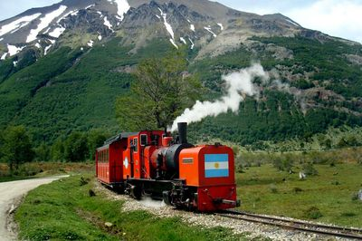

Home
About Ushuaia
Activities
Reserve
Contact
Actividades
Sea Invierno o Verano Ushuaia está llena de Actividades
Actividades
Trekking a la Laguna Esmeralda
DURACIÓN:
6:00h
FRECUENCIA:
Todo el año. Salidas diarias am y pm.
PUNTO DE ENCUENTRO:
Oficina de Tolkeyen en San Martin.
INCLUYE:
Almuerzo.
Desde $2000
Actividades en el Cerro Castor
DURACIÓN:
5 horas
FRECUENCIA:
Solo en temporada Invernal.
PUNTO DE ENCUENTRO:
Ruta 3.
INCLUYE:
Pase del dia.
Desde $10000
Trekking a la Laguna Turquesa
DURACIÓN:
5:00/6:00h
FRECUENCIA:
Todo el año. Salidas diarias am y pm.
PUNTO DE ENCUENTRO:
Rta 3 de Ushuaia.
INCLUYE:
Almuerzo.
Desde $1000
Paseo por el Parque Nacional
DURACIÓN:
2:30/2:50h
FRECUENCIA:
Todo el año. Salidas diarias am y pm.
PUNTO DE ENCUENTRO:
Oficina del Parque en De Las Estancias.
INCLUYE:
Pase dek Parque.
Desde $700

Excursion por el Tren del Fin del Mundo
DURACIÓN:
1:00/ 2:00h
FRECUENCIA:
Todo el año. Salidas diarias am y pm.
PUNTO DE ENCUENTRO:
Entrada del Paque Nacional de Ushuaia.
INCLUYE:
Ticket de Tren.
Desde $4000
Visita al Museo del Presidio
DURACIÓN:
2:30/2:50h
FRECUENCIA:
Todo el año. Salidas diarias am y pm.
PUNTO DE ENCUENTRO:
Calle San Martin al 250.
INCLUYE:
Tasa de puerto.
Desde $800
Visita el Faro del Fin del Mundo
DURACIÓN:
2:30/2:50h
FRECUENCIA:
Todo el año. Salidas diarias am y pm.
PUNTO DE ENCUENTRO:
Oficina de Tolkeyen en el muelle turístico.
INCLUYE:
Tasa de puerto.
Desde $8500
Vuelta en Helicoptero
DURACIÓN:
10 minutos.
FRECUENCIA:
Todo el año.
PUNTO DE ENCUENTRO:
Oficina en San Martin.
INCLUYE:
Vista al Cerro.
Desde $7600
Social Links
Twitter
Facebook
Youtube
Instagram